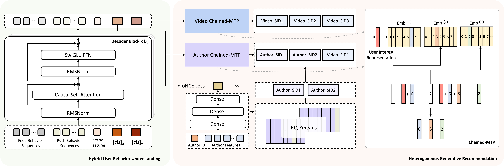
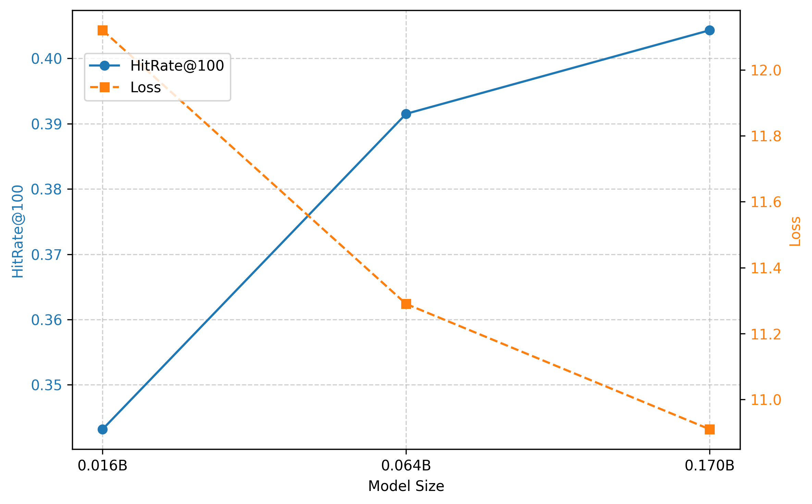

目录 · 9 节
1它到底在解决什么问题？2整体流程：一个主干，两个分支，再加一步强化学习3Chained-MTP：怎么一次前向算完三级编号？4作者分支：怎么让编号带上“谁信任这个作者”？5UCPA：怎么用点开之后的行为纠正标题党？6实验结果说明了什么？7我认为它的局限8一个推荐团队可以怎么试9总评做生成式召回、又被线上吞吐卡住的推荐团队值得读这篇。它的价值不在于又一个生成式推荐模型，而在于给出了一个工程上很实用的折中：多级 Semantic ID 不再逐级重跑 Transformer，而是用一次前向加几个小网络算完，命中率几乎不掉，吞吐明显上去。核心思想一句话：一个模型同时生成“推哪个视频”和“推哪个作者”两类候选，再用用户点开 Push 之后的真实观看行为做强化学习微调。论文来自快手 Push 通知系统，叫 HGenPush（Heterogeneous Generative Push）。线上相比原来的多阶段架构，日活 +0.181%，点击率 +1.577%；多级编号的预测方式从逐级 Transformer 换成论文的 Chained-MTP 后，单卡最大 QPS 从 1.27k 提到 1.70k，HitRate@100 只从 0.3954 降到 0.3915。证据全部来自快手 Push 一个场景，没有公开数据集上的结果，完整版的部分线上指标也没有达到统计显著，下文会细说。
它到底在解决什么问题？
先看一个示意场景。一个用户常看美食视频，平台上有两位做家常菜的作者 A 和 B，内容类别几乎一样。这个用户长期只看 A：A 一发新视频他就点开看完，B 的视频他刷到也很快划走。Push 系统每天只能给他发有限的几条通知，选错一条，用户就可能关掉通知权限。
这个场景暴露了现有生成式推荐的三个问题。
第一，只推视频，不推作者。TIGER、OneRec 这类方法把每个视频表示成几级 Semantic ID，让模型生成视频的编号。A 和 B 的视频内容相近，编号也相近，单看视频编号很难学出“这个用户信任 A、不信任 B”。论文的说法是，用户对作者的信任体现在行为上，单靠内容推不出来。
第二，逐级生成太慢。多级编号通常一级一级生成，每生成一级就要再跑一遍模型。Push 一次要给大量用户算候选，召回如果太慢，就替代不了现有的多阶段链路。
第三，只用点击训练，容易学出标题党。用户点开了，但几秒就划走，这条推荐其实是失败的。点开之后有没有看完、点赞、转发，才更接近内容本身的价值。
整体流程：一个主干，两个分支，再加一步强化学习

整个模型的分工可以先看这张表，下面再拆开讲。
| 部件 | 输入 | 输出 | 解决什么 |
|---|---|---|---|
| 用户行为理解（主干） | 首页长期和短期行为、Push 点击序列、Push 发送序列、年龄性别等静态特征 | 两个特殊 token 的输出向量，各代表一份用户兴趣 | 把多个场景的行为合到一起 |
| 视频分支 | 视频分支那个特殊 token 的向量 | 视频的 3 级编号 | 用 Chained-MTP 一次算完，解决逐级生成太慢 |
| 作者分支 | 作者分支那个特殊 token 的向量 | 作者的 2 级编号，再接视频第 1 级编号 | 只推视频、不推作者 |
| UCPA | 用户点开 Push 后这次访问里看过的视频和行为标签 | 对视频分支的强化学习更新 | 只看点击导致标题党 |
主干是只有解码器的 Transformer，16 层，向量维度 512。序列里的每个视频都先拼出一组特征向量，再投影成一个 512 维向量，但两类序列用的特征不同。首页长期和短期行为里的视频用 Semantic ID、作者 ID、话题标签和观看时长；Push 点击序列和发送序列里的视频用 Semantic ID、作者 ID 和通知类型，通知类型用来学这个用户更愿意点哪种形式的通知。四类序列和静态特征拼成一条长序列，末尾加两个特殊 token，一个给作者分支、一个给视频分支。因为是因果注意力，排在最后的这两个 token 能看到前面所有行为，它们的输出就当作两份汇总好的用户兴趣。
为什么用只有解码器的结构？论文对比过编码器-解码器版本：编码器-解码器 0.026B 参数，HitRate@100 为 0.3400；只有解码器的版本 0.016B 参数，HitRate@100 为 0.3432。这说明参数从 0.026B 降到 0.016B，命中率反而略高，所以选了更省内存、推理更快的结构。这组对比里只有解码器版本的 0.016B 和 0.3432，与后文规模实验中最小一档（8 层、256 维）的数字相同，也就是说这是在小一档的模型上比的，不是最终的 16 层主干。
Chained-MTP：怎么一次前向算完三级编号？
视频的编号有 3 级，每级 8192 个取值，由视频的多模态向量生成，做法和 OneRec 一致；这套编号既是行为序列里每个视频的输入特征，也是视频分支要生成的目标。常见做法是生成完第 1 级，把它接回输入，再跑一遍 Transformer 生成第 2 级，依此类推。Chained-MTP 的做法是：Transformer 只跑一次，得到视频分支那个特殊 token 的输出向量 ；之后每一级只用一个小的前馈网络。
这里 是第 级编号， 是第 级编号专用的一张向量表， 是第 级专用的前馈网络。直觉是：用户兴趣向量 始终不变，像一个固定的锚点；前面几级已经选定的编号，各自查表得到一个向量，加到 上，告诉第 级“前面已经选了什么”。
走一遍示意过程：第 1 级先用 过 ，选出编号 37（示意）；第 2 级用 加上第 1 级表里 37 号的向量，过 ，选出 1024（示意）；第 3 级用 加上 37 号和 1024 号两个向量，过 。三步都只是向量加法和一个小网络，不再跑 16 层 Transformer。训练时三级各算一个交叉熵，加起来就是视频分支的损失，训练样本来自 Push 的点击数据。
为什么不干脆三级各自独立预测？论文把三种方式放在一起比：
| 方法 | HitRate@100 | 单卡最大 QPS |
|---|---|---|
| 三级各自独立预测（Parallel-MTP） | 0.1150 | 2.40k |
| 逐级用 Transformer 预测（DeepSeek-MTP） | 0.3954 | 1.27k |
| Chained-MTP | 0.3915 | 1.70k |
各级完全独立虽然最快，命中率却掉到 0.1150，说明第 2、3 级编号必须知道前面选了什么，这个依赖丢不得。逐级 Transformer 命中率最高，但吞吐比独立预测低 47.09%。Chained-MTP 只用查表相加保住了各级之间的依赖，吞吐比逐级 Transformer 高 33.86%，命中率只从 0.3954 降到 0.3915。这里的 QPS 是视频和作者两个分支合在一起的完整模型测出来的，更接近真实部署的开销。
作者分支：怎么让编号带上“谁信任这个作者”？
如果直接用作者的内容特征做编号，A 和 B 会拿到相近的编号，回到第一节的老问题。作者分支分三步解决。
第一步，先让作者向量对齐用户兴趣。作者 ID 和多模态向量先编码成一个作者向量，再和作者分支那个特殊 token 的用户兴趣向量一起投到同一个空间。训练用对比学习：同一批样本里，拉近用户和他真正点过的那位作者，推开同一批里其他用户点过的作者。这样学出的作者向量，相近的意思是“被同一类用户点开”，而不只是“发同一类内容”。在示意场景里，A 和 B 内容相近，但点 A 的用户和点 B 的用户不是同一批人，两人的向量会被分开。
第二步，把对齐后的作者向量编成 2 级编号，每级 8192 个取值。用的是 RQ-KMeans：第 1 级找离作者向量最近的中心，记下编号，用作者向量减去这个中心得到残差；第 2 级再对残差找最近的中心。编号向量表和模型一起训练、同步更新，损失是每一级残差到所选中心的距离；每个训练样本里目标作者的 2 级编号，就是用当时的编号表按上面两步算出来的。为了防止大部分编号一直没被选中、闲置不用，论文用了 SimVQ 的做法：编号向量表写成一张固定的表乘上一个可学习的矩阵，训练时更新的是这个矩阵，所有编号的向量会一起移动，不会有编号因为一直没被选中而停在原地。
第三步，生成目标是“作者编号 + 视频第 1 级编号”，一共 3 位。作者分支最终推的是这位作者的某条视频，所以后面接上视频第 1 级编号，相当于同时回答“推哪位作者”和“推他哪一类内容”。这 3 位编号同样用 Chained-MTP 生成，束搜索给出多组编号作为候选。要注意，论文没说作者编号是否唯一，也没说混合编号怎样反查作者、展开成哪些具体视频候选，只写到候选直接送进精排。
UCPA：怎么用点开之后的行为纠正标题党？
只用点击训练，模型会偏向“容易被点开”的内容。论文把这一步叫 UCPA（User Consumption Preference Alignment），思路是：把用户点开 Push 之后这次访问里看的视频当成一组，按行为打分，组内比较谁更好，再用强化学习往好的方向推。
打分规则是固定的，按平台日志里已有的行为标签累加，一个视频有几个标签就加减几次：
| 行为标签 | 分值 |
|---|---|
| 有效播放、进入作者主页、评论区停留 | 各 +2 |
| 点赞、关注、分享、评论 | 各 +1 |
| 短播（很快划走） | −2 |
| 点不喜欢 | −5 |
| 举报 | −10 |
论文的说明是，正分用来鼓励用户愿意看的内容，负分用来压低质量差或用户反感的视频。每组最多 50 个视频。组内的分数减去平均值再除以标准差，得到每个视频比同组平均好多少，记作优势。
示意例子：一次访问里看了三个视频。视频甲有效播放加点赞，得 3 分；视频乙短播，得 −2 分；视频丙有效播放、进入主页、分享，得 5 分。三者平均 2 分，标准差约 2.94，优势分别约为 0.34、−1.36、1.02。模型更新时，提高丙和甲的生成概率，压低乙的。
优化方法论文叫 GSISPO，结合了两个已有强化学习方法的做法：GSPO（按整串输出、而不是按单个 token 计算新旧模型概率比的方法）和 CISPO（把截断放在概率比上、以保留梯度的方法）。在公式里，这一组视频的生成概率都以同一个视频分支用户兴趣向量为条件，公式没有按视频区分这个向量。论文没说这份用户兴趣向量的行为输入截到点击前、点击后，还是这次访问结束。它对每个视频先在 3 级编号上分别算新模型和旧模型给出的概率之比，再对 3 级取几何平均。为什么按整串算？因为优势是给整个视频的，不该拆到单个编号上；而且在 Chained-MTP 里，只有整串 3 级编号才对应一个完整的视频，论文认为按整串算能避免把这串编号的完整含义拆散，训练也更稳定。这个比值被限制在 之内，但它只当作一个不回传梯度的权重，梯度通过对数概率传回。论文的理由是，这样超出范围的样本仍然能贡献梯度，小众但价值高的行为不会被直接丢掉。
强化学习这一项没有另加 KL 约束，因为视频分支原本的交叉熵损失一直在一起训练，起到稳住模型的作用。原文的总损失公式是视频生成、作者生成、作者编号表更新和 GSISPO 四项相加；作者对齐用的对比学习损失在作者分支一节单独给出，原文把作者分支描述为端到端结构，作者向量和作者生成同时学。推理时两个分支都用束搜索生成多条候选，直接送进精排，跳过粗排。
实验结果说明了什么？
数据来自快手 Push 系统，覆盖超过 4 亿日活用户，模型用线上流式数据持续训练。离线评估取各模型同一时刻保存的版本，在同一份线上采集的数据上测 HitRate@100。
| 模型 | 视频分支 | 作者分支 |
|---|---|---|
| SASRec | 0.3093 | 0.3495 |
| TIGER | 0.3802 | 0.4677 |
| HGenPush | 0.3915 | 0.4848 |
HGenPush 在两个分支上都最好。要注意作者分支的目标是 3 位混合编号，视频分支是 3 位视频编号，两列的数字不能互相比较。对照组只有 SASRec 和 TIGER，没有 OneRec 这类更新的工业方法。

规模方面，模型从 0.016B（8 层、256 维）扩到 0.064B（16 层、512 维），HitRate@100 从 0.3432 到 0.3915，相对提升 14.07%；再把前馈层换成稀疏专家扩到 0.170B，到 0.4043，只再提升 3.27%。实现细节里的 16 层、512 维正好对应 0.064B 这一档。这说明在这个范围里继续堆参数，收益在变小。
偏好对齐的离线对比最值得看。只用点击训练的基线 HitRate@100 是 0.3964。直接按观看时长给训练样本加权，会掉到 0.3394，说明这种加权打乱了“预测用户会点什么”这个主目标。用 UCPA 是 0.3915。直接加权会扭曲主训练目标，而组内比较让命中率只从 0.3964 降到 0.3915，换来了更多消费信号。线上 A/B 里，加 UCPA 相比只用点击的版本，转发率 +7.57%，完播率 +0.90%。这意味着用户不只是点开了，还更愿意看完和分享给别人。
最终线上实验分三步，都和原来的多阶段架构比，括号里是 p 值：
| 版本 | 日活 | 点击率 | App 使用时长 |
|---|---|---|---|
| v1：只有视频分支 | +0.126%（0.00） | +0.998%（0.00） | +0.095%（0.01） |
| v2：v1 加 UCPA | +0.153%（0.00） | +1.075%（0.02） | +0.145%（0.05） |
| v3：v2 加作者分支（完整版） | +0.181%（0.04） | +1.577%（0.11） | +0.148%（0.75） |
数字是一路涨的，但看 p 值要谨慎。v1 的三项都显著；完整版的日活 p 值是 0.04，点击率是 0.11，使用时长是 0.75，后两项按常用的 0.05 标准都不显著。而且三个版本都只和原来的线上系统比，没有直接比 v3 和 v2。所以作者分支带来的增量，这张表只能算方向一致，还不能算被证实。
我认为它的局限
第一，作者分支的证据最弱。离线上作者分支的 HitRate@100 是 0.4848，TIGER 是 0.4677，差距不大；线上加了它之后点击率的 p 值是 0.11、使用时长的 p 值是 0.75，而它恰恰是论文标题里“异构”的那部分。
第二，UCPA 的打分规则是人工定的一套固定值，比如举报 −10、短播 −2。实验只用了这一套规则，各项分值换一换，模型学到的偏好可能就不同。
第三，所有结果都来自快手 Push 一个场景，数据和工程栈都在内部。Push 有发送频率限制，用户反馈的密度也和信息流不同，换到别的场景要重新验证。候选跳过粗排直接进精排，精排要处理的候选会变多，这部分开销在实验里看不到。
一个推荐团队可以怎么试
- 已经有 Semantic ID 生成式召回的团队，先在离线环境里把多级编号的预测换成 Chained-MTP，和现有的逐级生成比 HitRate 和单卡 QPS。改动只在输出头，主干不用动；命中率差距在千分之几以内、吞吐有明显提升，就值得上线试。
- 有点击后行为日志的团队，先别直接按时长给样本加权，这篇的离线结果说明这样会伤主目标。可以照 UCPA 的做法，按一次访问分组、组内标准化后做强化学习，看命中率掉多少、消费指标涨多少。
- 平台上有明确的作者或店铺、而且用户对来源有稳定偏好时，再试作者分支。先只做“作者向量对齐用户兴趣再编号”这一步，看编号能不能把内容相近、受众不同的作者分开；线上要把实验时长和样本量做够，避免出现这篇里 p 值不显著的情况。
总评
这篇最关键的启发是：多级编号之间的依赖可以只靠查表相加来保留，不必每一级都重跑一遍大模型。
| 维度 | 评价 |
|---|---|
| 问题重要性 | 中高。生成式召回的推理开销是上线的主要障碍，Push 场景对延迟尤其敏感 |
| 方法创新性 | 中。Chained-MTP 设计简单有效；作者分支和 GSISPO 主要是已有方法的组合 |
| 实验证据 | 中。吞吐和消融数据清楚，但只有一个内部场景，完整版的部分线上指标不显著 |
| 工程成本 | 低到中。Chained-MTP 只改输出头；UCPA 需要点击后的行为日志 |
| 是否值得尝试 | 值得，优先试 Chained-MTP，作者分支视平台情况再定 |
读完这篇，你觉得
夜读鸮记下了，谢谢你的反馈。
点一下即可，无需登录；再点一次撤回。只统计匿名次数，不记录你是谁。
讨论
欢迎补充实验细节、复现经验或不同看法。需 GitHub 登录。
正在加载讨论…